Module 2 Understanding and Visualizing Data
Lab
In this lab, we’ll demo a popular tool and resources related to exploring our data and potentially finding datasets of interest.
The only requirements for the tutorial are as follows:
- An internet connection
- A modern browser
- An account with COSMIC : https://cancer.sanger.ac.uk/cosmic/register
Learning Objectives
- How to use IGV browser to explore data types : BAMs, VCFs, BEDs
- How to browse and make use of the visualization functions in cBioPortal
- How to browse and make use of the visualization functions in COSMIC
Part 1 - IGV
Learning Objectives
- How to use IGV browser to explore data types : BAMs, VCFs, BEDs
- How to traverse the genome
- Loading Tracks and annotations
- How to find additional info for each genomic feature
To get started, Please navigate over to https://igv.org/app/
Question : Aside from avoiding installation issues, a browser version is much more convenient and accessible. Why should one consider using a local installation of IGV vs the online version?
- Data size - Imagine streaming multiple 500 GB files
- Data protection - if you’re working with sensitive data that is under DACO restriction or patient data, you’re limited by where you store and send the data
BAM
Step 1 – Open IGV-Web and choose the genome
Make sure our build is on Hg38, to do so click “Genome” and navigate the dropdown to find GRCh38/hg38
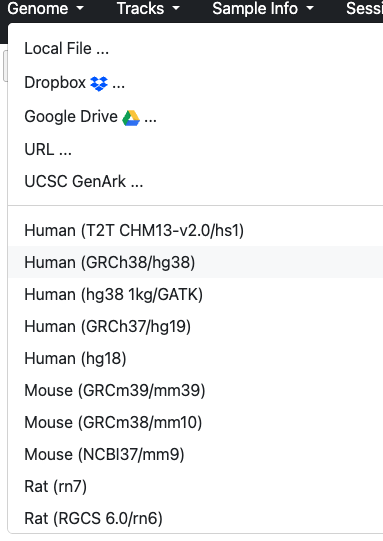
Let’s load our data, select Tracks, then URL from the dropdown,
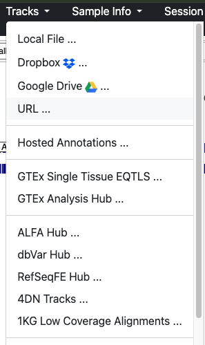
Step 2 – Loading the BAM and Index
Paste the following info, ensure the BAM file goes into the Track and index file into index:
https://42basepairs.com/download/s3/gatk-test-data/wgs_bam/NA12878_20k_hg38/NA12878.bam
https://42basepairs.com/download/s3/gatk-test-data/wgs_bam/NA12878_20k_hg38/NA12878.baiNA12878 is the GIAB/1000 Genomes reference individual. This BAM is a very small subset of a whole-genome run: about 61,000 mapped reads across the whole genome, compared with hundreds of millions in a real 30× genome. It is meant for teaching.
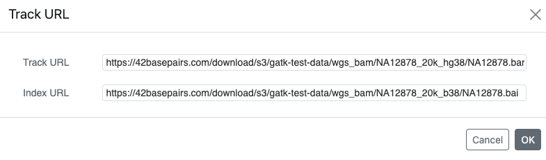
Step 3 – Post loading sanity check
What do we see after loading?
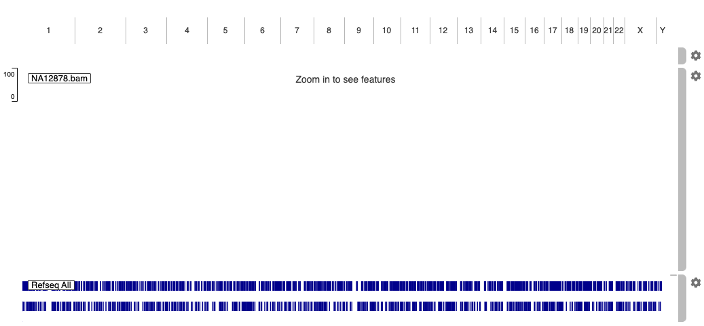
Question : We don’t see much. How come?
- One possibility is wrong genome build. Not the case here but a possibility.
- The toy BAM being examined is also very small in comparison. So the reads representation will be sparse.
- In both the browser and local version of IGV, the number of reads visualized is limited, especially at whole genome view that’s an overwhelming amount of data to visualize. For the browser, imagine everyone trying to load a 1TB BAM. Local version can adjust settings according to hardware limitations.
Step 4 – Zoomed in look
Let’s zoom in to a more manageable view. Paste the following coordinates into the search bar
chr1:143,220,111-143,221,807Once the result loads, what do we see?
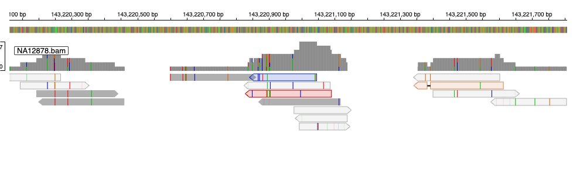
Question : What are the grey lines? What do the ends (sharp vs blunt) represent?
Each grey bar is a read. The pointed end shows the direction it was sequenced: pointing right = forward (+) strand, pointing left = reverse (−).
Question : What are the colour dashes in each block?
Mismatches
Question : What is the graph bar above?
Coverage, the height represents the amount of reads per BP. If coloured, shows the ratio of mismatches per nucleotide
Step 5 – Read features
Clicking on a read, its info can be displayed.
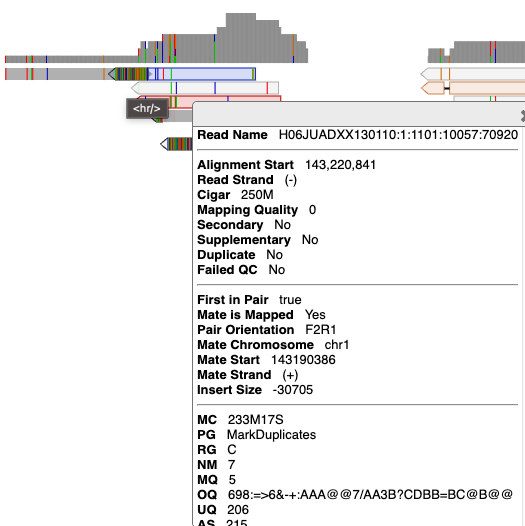
Question : What do the blue, red and orange reads represent?
When compared to the grey reads, the reads are identified due to their abnormal insert size. The causes could vary from a genomic feature (e.g. structural variant), RNA-seq (though not in this case), lack of size selection during library prep (there would be other signs as well). Toggleable via the gear icon on the right side of the track. Select under “Color by”, “Pair Orientation & insert size (TLEN)”
Step 6 – Utilizing track annotations
Let’s try a different region
chr2:32,915,196-32,917,755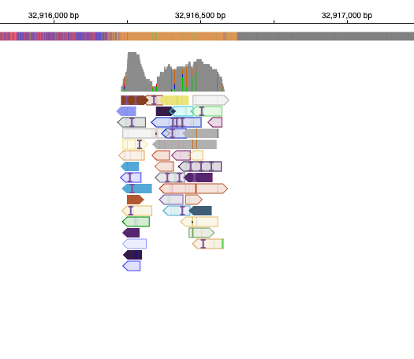
Question : Why are almost all reads coloured?
Similarly to the last question, the reads are highlighted due to the unexpected read orientation.
What genes are these reads at? How would we find out? - RefSeq is already loaded. We can try another annotation
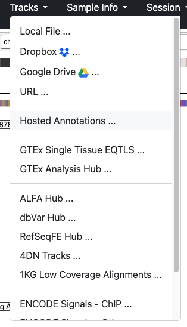
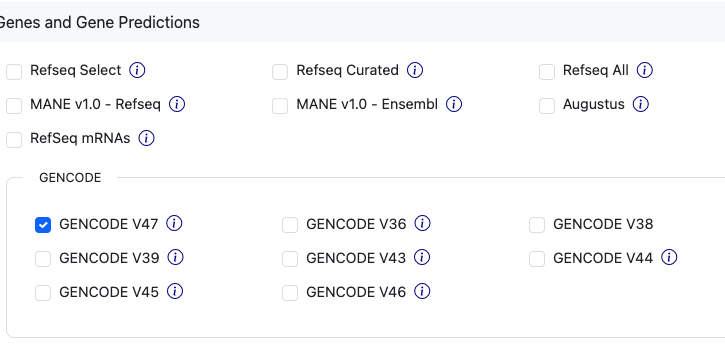
We can see that the reads intersect a “lncRNA” (long non-coding RNA).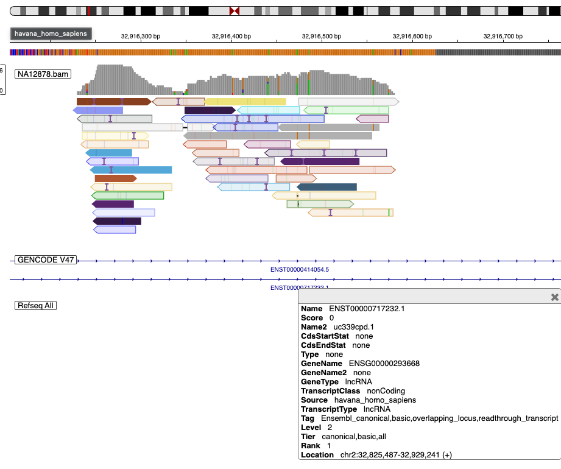
VCF
Step 7 – Working with VCFs (Germline SNVs)
Let’s load a VCF
https://42basepairs.com/download/web/giab/data_somatic/HG008/NIST/HG008-T_bulk/20240508p100/analysis/GRCh38/BCM_Revio_HG008T-p100_20260313/HG008-T_vs_HG008-N-P/small_variants/HG008-N-P.dipcall.germline.vcf.gz
https://42basepairs.com/download/web/giab/data_somatic/HG008/NIST/HG008-T_bulk/20240508p100/analysis/GRCh38/BCM_Revio_HG008T-p100_20260313/HG008-T_vs_HG008-N-P/small_variants/HG008-N-P.dipcall.germline.vcf.gz.tbiThese VCFs come from HG008, the GIAB pancreatic cancer tumour/normal cell-line pair, and not from NA12878. The BAM and VCFs belong to different people, so don’t expect the reads to support these variants.
Then navigate to the coordinates :
chr1:143,206,141-143,206,141Let’s note what we see:
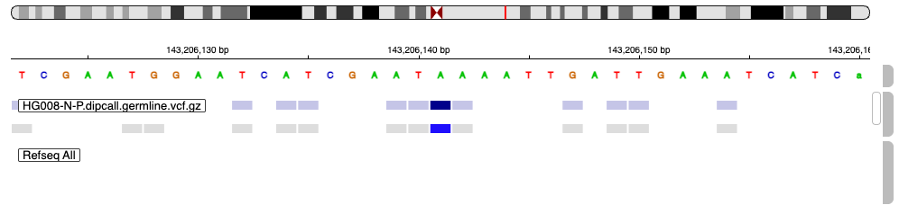
Focusing on the non-greyed feature, what are the VCF features? Use the name and hover over the item for more informationAdditionally, a snippet of the VCF for reference:
##fileformat=VCFv4.2
##FILTER=<ID=PASS,Description="All filters passed">
.
.
.
##FORMAT=<ID=GT,Number=1,Type=String,Description="Genotype">
##FORMAT=<ID=AD,Number=R,Type=Integer,Description="Allelic depths for the ref and alt alleles in the order listed">
##FILTER=<ID=HET1,Description="Heterozygous in the first haplotype">
##FILTER=<ID=HET2,Description="Heterozygous in the second haplotype">
##FILTER=<ID=GAP1,Description="Uncalled in the first haplotype">
##FILTER=<ID=GAP2,Description="Uncalled in the second haplotype">
##INFO=<ID=TRF,Number=0,Type=Flag,Description="Entry hits a tandem repeat region">
##INFO=<ID=TRFdiff,Number=1,Type=Float,Description="ALT TR copy difference from reference">
##INFO=<ID=TRFrepeat,Number=1,Type=String,Description="Repeat motif">
##INFO=<ID=TRFovl,Number=1,Type=Float,Description="Percent of ALT covered by TRF annotation">
##INFO=<ID=TRFstart,Number=1,Type=Integer,Description="Start position of discovered repeat">
##INFO=<ID=TRFend,Number=1,Type=Integer,Description="End position of discovered repeat">
##INFO=<ID=TRFperiod,Number=1,Type=Integer,Description="Period size of the repeat">
##INFO=<ID=TRFcopies,Number=1,Type=Float,Description="Number of copies aligned with the consensus pattern">
##INFO=<ID=TRFscore,Number=1,Type=Integer,Description="Alignment score">
##INFO=<ID=TRFentropy,Number=1,Type=Float,Description="Entropy measure">
##INFO=<ID=TRFsim,Number=1,Type=Float,Description="Similarity of ALT sequence to generated motif faux sequence">
##INFO=<ID=END,Number=1,Type=Integer,Description="End position of the variant">
##bcftools_pluginVersion=1.14+htslib-1.21
##bcftools_pluginCommand=plugin fill-tags -Oz -o results/asm_varcalls/GRCh38_HG008N~v6.3-dipz2k/annotations/GRCh38_HG008N-v6.3_dipcall-z2k.trfanno.end_info.vcf.gz -- results/asm_varcalls/GRCh38_HG008N~v6.3-dipz2k/annotations/GRCh38_HG008N-v6.3_dipcall-z2k.trfanno.vcf.gz -t END; Date=Wed Jan 14 14:06:11 2026
##bcftools_viewVersion=1.14+htslib-1.21
##bcftools_viewCommand=view -e ALT="<INV>" -Oz -o results/asm_varcalls/GRCh38_HG008N~v6.3-dipz2k/annotations/GRCh38_HG008N-v6.3_dipcall-z2k.trfanno.end_info.no_inv.vcf.gz results/asm_varcalls/GRCh38_HG008N~v6.3-dipz2k/annotations/GRCh38_HG008N-v6.3_dipcall-z2k.trfanno.end_info.vcf.gz; Date=Wed Jan 14 14:06:28 2026
##HiPhase_version="1.5.0-8af3f1e"
##HiPhase_command="hiphase --bam /mnt/miniwdl_task_container/work/_miniwdl_inputs/0/m84039_250325_050416_s2.hifi_reads.aligned.bam -t 24 --output-bam m84039_250325_050416_s2.hifi_reads.aligned.hiphase.bam --vcf /mnt/miniwdl_task_container/work/_miniwdl_inputs/0/GRCh38_HG008N-v6.3_smvar_dipcall-z2k.vcf.gz --output-vcf GRCh38_HG008N-v6.3_smvar_dipcall-z2k.hiphase.vcf.gz -r /mnt/miniwdl_task_container/work/_miniwdl_inputs/0/GRCh38_GIABv3_no_alt_analysis_set_maskedGRC_decoys_MAP2K3_KMT2C_KCNJ18.fasta --stats-file m84039_250325_050416_s2.hifi_reads.aligned.hiphase.stats --summary-file m84039_250325_050416_s2.hifi_reads.aligned.hiphase.summary.tsv --blocks-file m84039_250325_050416_s2.hifi_reads.aligned.hiphase.blocks.tsv --ignore-read-groups"
##FORMAT=<ID=PS,Number=1,Type=Integer,Description="Phase set identifier">
##FORMAT=<ID=PF,Number=1,Type=String,Description="Phasing flag">
#CHROM POS ID REF ALT QUAL FILTER INFO FORMAT HG008N
chr1 89177 . A G 30 . END=89177 GT:AD 1/1:0,2
chr1 143206141 . A G 30 . TRF;END=143206141 GT:AD 0/1:70,2Question : What type of variant is it?
SNP according to the “type”
Question : What are the feature’s coordinates?
Can be found under “LOC”
Question : What is the reference vs alt?
“REF” represents the sequence found in the reference genome. “ALT” represents the sequence that was found in the sample. In this case it was a “A” vs “G” thus the SNP Also take note of the genotype in IGV : “A|G”. This notation is different than in the VCF and carries some different interpretations. In VCFs the genotype field can present as `0/1` meaning unphased or `0|1` phased. Being phased means we know which allele belongs on which chromosome copy. The same cannot be said for unphased. Short read sequencing does not provide that resolution, and would need long reads (for example). That context is lost in IGV, and instead IGV displays the alleles as bases, e.g. A|G, using `|` as a fixed separator regardless of phasing.
Question : What is the depth?
“AD” stands for allelic depth and represents the evidence/reads supporting each allele. It’s interpreted by the genotype “A | G” and “70,2” meaning 70 reads support the reference and 2 reads support the alt allele.
Question : Compared to the features beside it, why are those features greyed out?
Other SNPs were filtered. For the specific reason, see the “FILTER” section. Definitions for the filter are likely to be found within the header of the VCF file.
Step 8 – Working with VCFs (Somatic Structural Variants)
Let’s load another feature
https://42basepairs.com/download/web/giab/data_somatic/HG008/NIST/HG008-T_bulk/20240508p100/analysis/GRCh38/BCM_Revio_HG008T-p100_20260313/HG008-T_vs_HG008-N-P/structural_variants/HG008T-p100.severus.somatic.vcf.gz
https://42basepairs.com/download/web/giab/data_somatic/HG008/NIST/HG008-T_bulk/20240508p100/analysis/GRCh38/BCM_Revio_HG008T-p100_20260313/HG008-T_vs_HG008-N-P/structural_variants/HG008T-p100.severus.somatic.vcf.gz.tbiAnd let’s navigate to :
chr19:38,760,896-39,923,840Let’s note what we see:
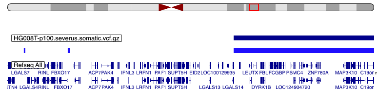
Notice the huge feature that’s been flagged.
For reference, this is how the VCF contents look:
##fileformat=VCFv4.2
##FILTER=<ID=PASS,Description="All filters passed">
##source=Severus_v1.6
.
.
.
##ALT=<ID=DEL,Description="Deletion">
##ALT=<ID=INS,Description="Insertion">
##ALT=<ID=DUP,Description="Duplication">
##ALT=<ID=INV,Description="Reciprocal Inversion">
##ALT=<ID=BND,Description="Breakend">
##FILTER=<ID=FAIL_LOWSUPP,Description="Less number of support, but ok in other samples">
##FILTER=<ID=FAIL_MAP_CONS,Description="Majority of variant reads have unreliable mappability">
##FILTER=<ID=FAIL_CONN_CONS,Description="Majority of variant reads have unreliable connections">
##FILTER=<ID=FAIL_LOWCOV_OTHER,Description="Low variant coverage in other samples">
##INFO=<ID=PRECISE,Number=0,Type=Flag,Description="SV with precise breakpoints coordinates and length">
##INFO=<ID=IMPRECISE,Number=0,Type=Flag,Description="SV with imprecise breakpoints coordinates and length">
##INFO=<ID=SVTYPE,Number=1,Type=String,Description="Type of structural variant">
##INFO=<ID=SVLEN,Number=1,Type=Integer,Description="Length of the SV">
##INFO=<ID=END,Number=1,Type=Integer,Description="End position of the SV">
##INFO=<ID=STRANDS,Number=1,Type=String,Description="Breakpoint strandedness">
##INFO=<ID=DETAILED_TYPE,Number=1,Type=String,Description="Detailed type of the SV">
##INFO=<ID=INSLEN,Number=1,Type=Integer,Description="Length of the unmapped sequence between breakpoint">
##INFO=<ID=MAPQ,Number=1,Type=Integer,Description="Median mapping quality of supporting reads">
##INFO=<ID=PHASESETID,Number=1,Type=String,Description="Matching phaseset ID for phased SVs">
##INFO=<ID=HP,Number=1,Type=Integer,Description="Matching haplotype ID for phased SVs">
##INFO=<ID=CLUSTERID,Number=1,Type=String,Description="Cluster ID in breakpoint_graph">
##INFO=<ID=INSSEQ,Number=1,Type=String,Description="Insertion sequence between breakpoints">
##INFO=<ID=MATE_ID,Number=1,Type=String,Description="MATE ID for breakends">
##INFO=<ID=INSIDE_VNTR,Number=1,Type=String,Description="True if an indel is inside a VNTR">
##INFO=<ID=ALIGNED_POS,Number=1,Type=String,Description="Position in the reference">
##INFO=<ID=LOW_COV_IN,Number=1,Type=String,Description="Samples that has low coverage in that region">
##INFO=<ID=INSIDE_WHITELIST,Number=1,Type=String,Description="SVs within the whitelist bed file">
##FORMAT=<ID=GT,Number=1,Type=String,Description="Genotype">
##FORMAT=<ID=DR,Number=1,Type=Integer,Description="Number of reference reads">
##FORMAT=<ID=DV,Number=1,Type=Integer,Description="Number of variant reads">
##FORMAT=<ID=VAF,Number=1,Type=Float,Description="Variant allele frequency">
##FORMAT=<ID=hVAF,Number=3,Type=Float,Description="Haplotype specific variant Allele frequency (H0,H1,H2)">
##INFO=<ID=BCSQ,Number=.,Type=String,Description="Local consequence annotation. Format: Consequence|gene|transcript|biotype|strand|amino_acid_change|dna_change">
##INFO=<ID=hetalt,Number=.,Type=String,Description="Samples with heterozygous REF/ALT genotype">
##INFO=<ID=homalt,Number=.,Type=String,Description="Samples with homozygous ALT/ALT or hemizygous ALT genotype">
#CHROM POS ID REF ALT QUAL FILTER INFO FORMAT m84113_260205_082846_s3.demux.bc2055--bc2055.aligned.hiphase
chr1 151220118 severus_DEL306 N <DEL> 60 PASS PRECISE;SVTYPE=DEL;SVLEN=172;END=151220290;STRANDS=+-;MAPQ=60;PHASESETID=151409146|151409146;HP=1;BCSQ=sv:intron|PIP5K1A||protein_coding|+||;hetalt=m84113_260205_082846_s3.demux.bc2055--bc2055.aligned.hiphase GT:VAF:hVAF:DR:DV 0/1:0.8:0,1,0:5:20
chr1 154714649 severus_BND18941 N N. 60 PASS IMPRECISE;SVTYPE=sBND;STRANDS=+;DETAILED_TYPE=loose_end;MAPQ=60;PHASESETID=154791972|154791972;HP=2;BCSQ=sv:intron|KCNN3||protein_coding|-||;hetalt=m84113_260205_082846_s3.demux.bc2055--bc2055.aligned.hiphase GT:VAF:hVAF:DR:DV 0/1:0.16:0,0,0.26:26:5Question : What type of variant is it?
It is a structural variant. Much larger than the single base of SNVs. The Alt also indicates it is a deletion event.
Question : How long is the feature?
~10.8 Mb according to the SV length field
Question : What is the feature’s ID and what purpose
does the ID field serve?
“severus_DEL3275” and to act as a unique identifier
Question : How would we find out how many genes are affected by the feature?
The BCFtools Consequence or BCSQ identifies the genes affected.
BED/bigBed
Step 9 – Working with BigBed / External Annotation
Let’s explore BED files. Load the following URL into the track
https://hgdownload.soe.ucsc.edu/gbdb/hg38/encode4/ccre/encodeCcreRegistry.bbQuestion : Notice anything different with the file suffix?
It is a bigBed file. The same as a regular bed file but binarized, compressed and indexed for accessibility. IGV is able to only fetch the region on screen and does not require a separate index file. To find out more see the following link
How to interpret the features described by the bed file? The UCSC genome browser describes the file in great detail, specifically:

For more info see the following link
If we navigate to TP53 by typing TP53 in the search bar, we see the following:
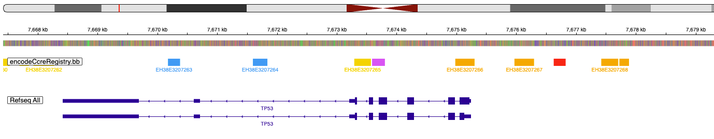
TP53 has 26 RefSeq transcripts, but IGV only shows 2 of them. We can access the settings on refSeq annotation through the gear on the right → Set track height → 700. All 26 rows appear.
Question : What is the red feature? What is the importance of the feature and where it is located?
It is a promoter-like element (PLS). ENCODE only assigns this class to regions near an annotated transcription start site. The main TP53 promoter is the cluster of red elements at the far right (~7,687 kb). The single red element at ~7,676.7 kb sits inside the full-length gene, in intron 1, just upstream of exon 2, which holds the start codon. Its promoter-like chromatin and a GENCODE V39 transcript starting there suggest a candidate alternative start site.
Part 2 - cBioPortal
Learning Objectives
- How to browse and make use of the visualization functions in cBioPortal
- Learn to query genes and datasets of interest
- Make use of visualizations to discover relationships and biological trends
Firstly, what is cBioPortal? As per their about page, Multimodal data represented in interactive visualizations that facilitates biological discovery and clinical decisions. It incorporates patient-level cohort data such as mutations and clinical data.
Step 1 – Select the studies and build the query
Navigate to https://www.cBioPortal.org/ and select the following two studies:
- Breast Cancer (METABRIC, Nature 2012 & Nature Commun 2016)
- Consists of 2,509 samples of targeted sequencing on primary tumours with 549 normal matched
- Breast Invasive Carcinoma (TCGA, PanCancer Atlas)
- 1,084 samples as part of a large cohort that profiled 10,000 tumours across 33 cancer types
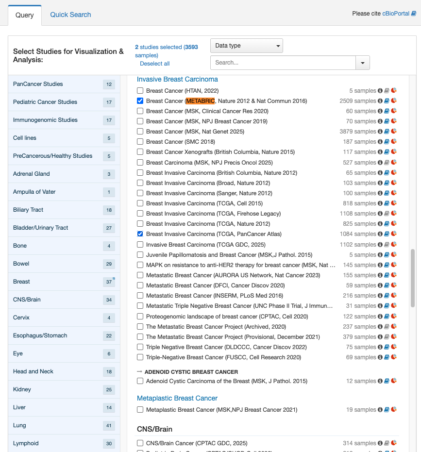
Click “query by gene” at the footer and query the following :
TP53 PIK3CA BRCA1 BRCA2 PTEN STK11 CDH1 PALB2 CHEK2 ATM BARD1 RAD51C RAD51D FGFR2 TOX3 MAP3K1 ESR1 ERBB2 GATA3These genes are commonly altered in breast cancer, and working with them in the tutorial will provide some insight of their significance.
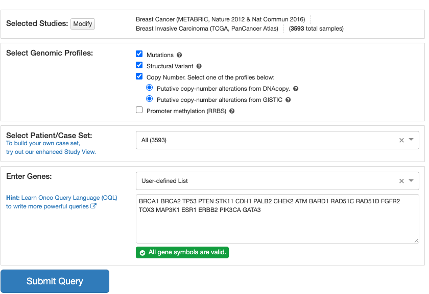
Step 2 – OncoPrint
We are presented with an OncoPrint
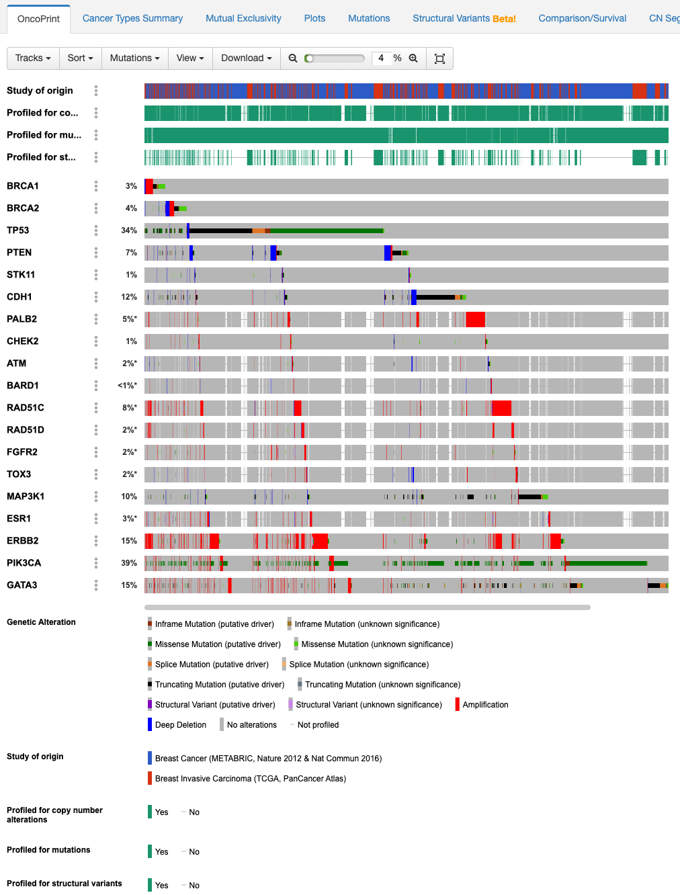
Question : What do the first four rows present and mean?
As indicated in the legend, the first four rows provide info on donors’ membership in the respective datasets and whether they were profiled for copy number changes, mutations, and structural variants.
Question : We see multiple genes, focusing on TP53 and
PIK3CA, what can we infer?
The percentage represents the number of donors with genetic alterations, where the legend specifies the type and proportion of donors
Step 3 – Cancer Types Summary
On the above tabs, navigate to the cancer types summary view
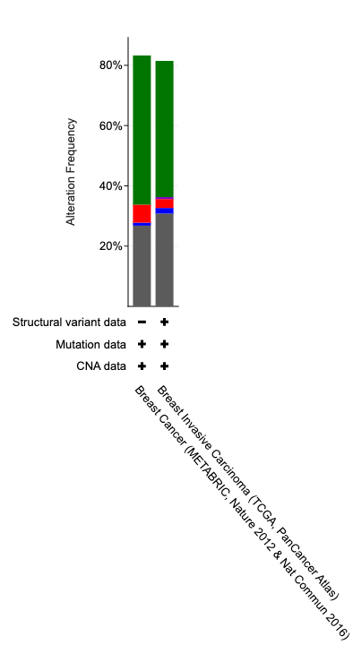
Question : What does the barchart summarize for us?
X-axis gives info on the dataset and included profiled genomic alteration types. The Bars provide a frequency of genomic alterations.
Step 4 – Mutual Exclusivity
Moving on to mutual exclusivity, select significant only and sort by q-value starting with lowest/most significant
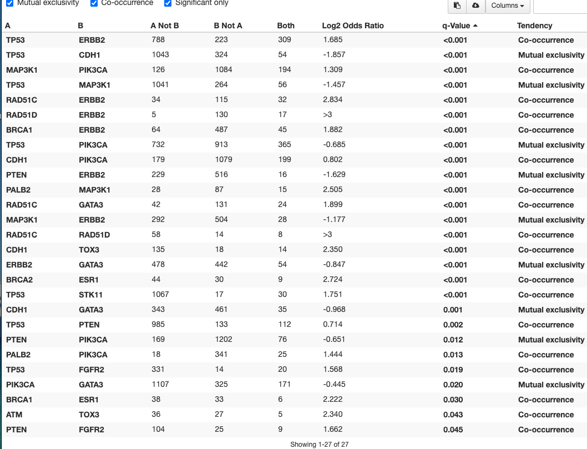
The first row denotes TP53 and ERBB2.
Question : What does the finding of co-occurrence entail?
Based on the two datasets, TP53 and ERBB2 are often both found to be altered Perhaps an interesting link to look at
Looking at the second row of TP53 and CDH1
Question : What does the finding of mutual exclusivity entail?
Very few examples exist in the two breast cancer datasets where both TP53 and CDH1 co-occur, in fact most donors have one or the other. This could signify a dependency specific to the cancer type.
Step 5 – Plots
Exploring the plots tab next. Let’s use the quick filter for FGA vs Dx
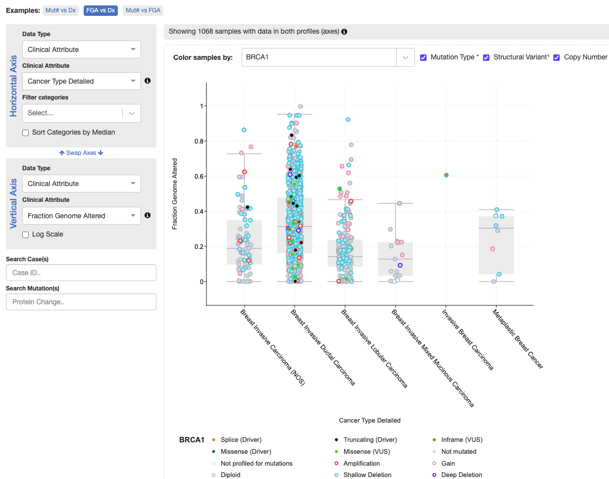
Question : What info can we glean from the plot?
The TCGA datasets are split up into various types of breast carcinomas. Breast invasive ductal carcinoma shows the highest fraction of genome altered, signifying genomic instability.
- Let’s look at the mutations tab, specifically for gene TP53
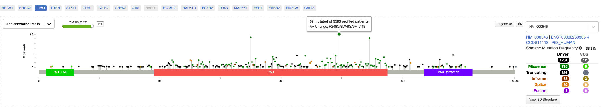
Step 6 – Mutations
- Let’s look at the mutation with the highest donor count
Question : Where does it occur in TP53?
In the TP53 region that binds DNA. Amino acid 248
Question : What type of mutation is it?
Different types, but often missense
Question : Are there any Post-Translational Modifications associated with the mutation?
On the left, we can add annotation tracks. Specifically we’re interested in Post-Translational Modifications (PTM). Scrolling around, no modification coincides with the mutation.
Speaking of annotations, what if we wanted to find out more about the mutation? What can we look up through OncoKB?
- Hovering over the first row of the mutations table, note the record of sample ID
MB-0211with the protein changeR248Q - Hover on the dartboard icon under the column annotation
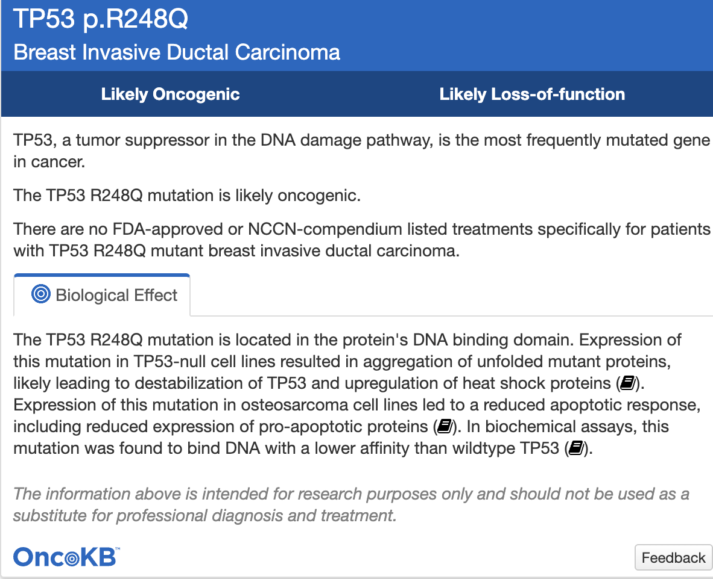
Step 7 – Comparison/Survival
- Looking at survival curves.
Question : What can we understand about TP53 vs unaffected cohort (no alteration in any of the 19 queried genes)?
Patients with TP53 mutations initially have poorer survival odds but around 180-200 months have better outcomes compared to the unaffected cohort.
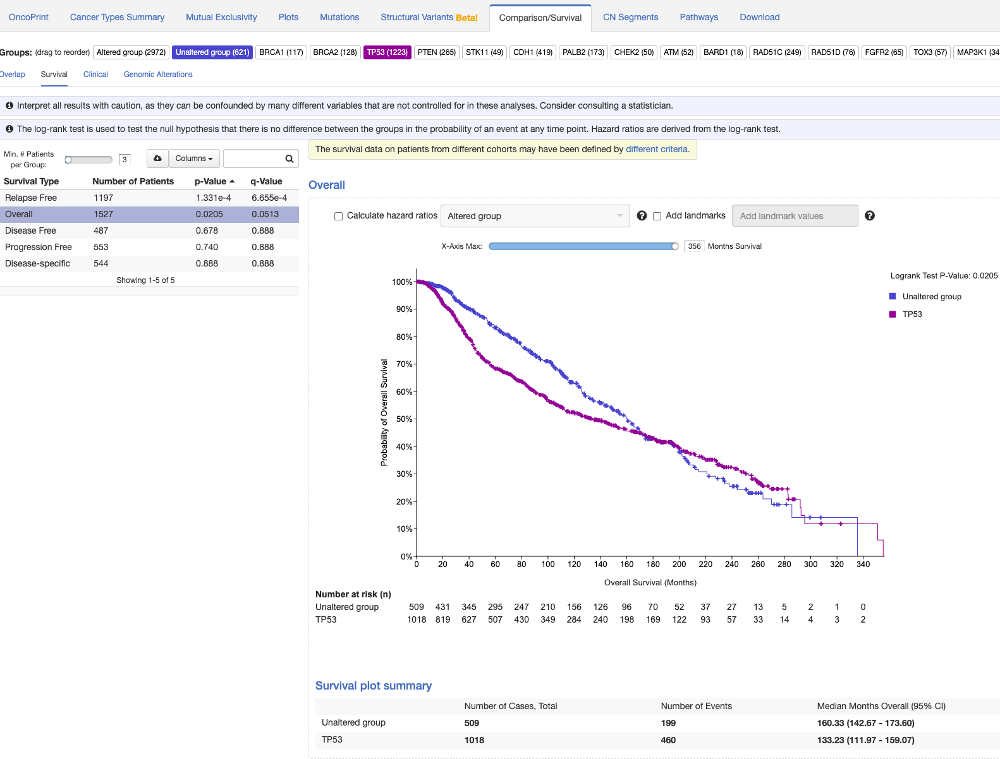
Part 3 - COSMIC
COSMIC (Catalogue of Somatic Mutations in Cancer) is a curated knowledge base of somatic mutations drawn from the literature and large-scale studies, along with data from other assays (e.g., methylation) and analyses (e.g., drug resistance).
An example use-case would be exploration with cBioPortal to find trends and patterns followed up with validation and annotating significance in COSMIC.
Learning Objectives
- How to browse and make use of the visualization functions in COSMIC
- Navigate datasets by refining the search using visualization functions
Navigate to COSMIC. You’ll need an account to access the data. Follow the prompts at the following link : https://cancer.sanger.ac.uk/cosmic/register
Step 1 – Search for a gene
Search for TP53 in the header search bar
Additionally, ensure you’re on the correct genome build GRCh38. The search returns the results page which groups hits by type (Genes, Mutations, Samples, Cancers, etc.). We need to choose the gene TP53 to open the gene page.
Step 2 – Read the gene view
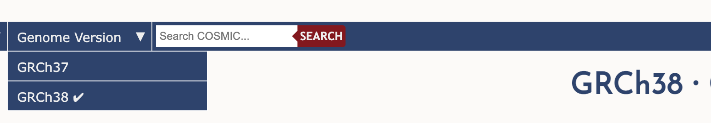
The central gene view plot displays various types of info along the length of the gene.
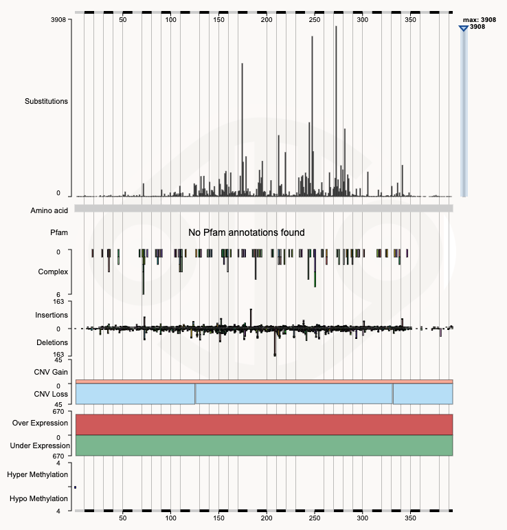
Hovering on the top substitution, we’ll find the position to be 273. We can further zoom in to that region for more info.
Step 3 – Zoom to positions 270–275
Apply the filters on the left-hand side for 270-275.
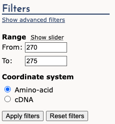
The result is the following barchart of substitutions.
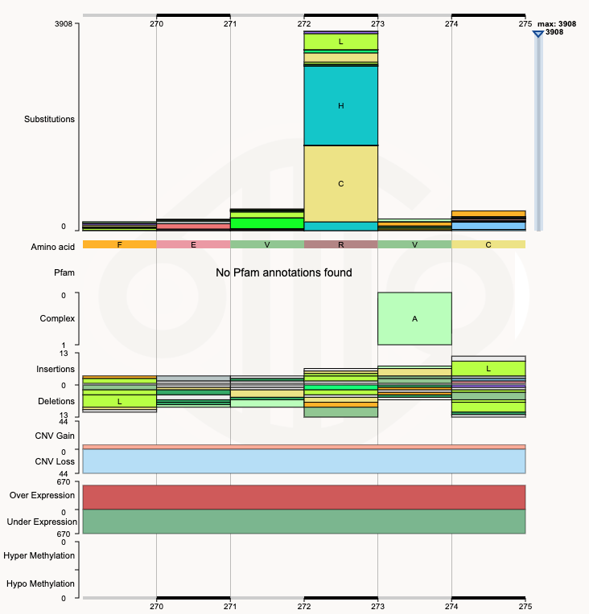
Question : Which substitution is the most common at position
273 of the TP53 gene?
p.R273H (c.818G>A) 1551
Step 4 – Open the mutation page
Clicking on the mutation brings us to a page dedicated to the mutation. Here, a number of interesting things can be viewed, including samples with the mutation, related references, and pathways. - The shape is the same (missense hotspots in the DNA-binding domain plus truncations everywhere), but COSMIC’s top hotspot is R273 across all cancers, while in cBioPortal’s two breast cohorts it was R248, with R175 and R273 close behind - Different sample collections give different rankings of the most common mutation!
We can also observe the tissue type distribution of samples with the TP53 mutations.
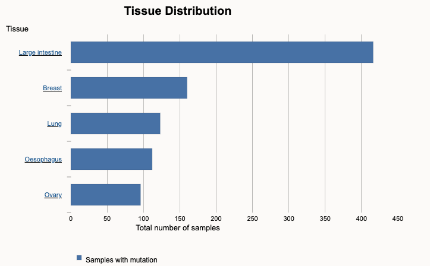
Step 5 – Jump to a tissue: the Cancer Browser
Clicking on the Large Intestine brings us to a page dedicated to Large Intestine.
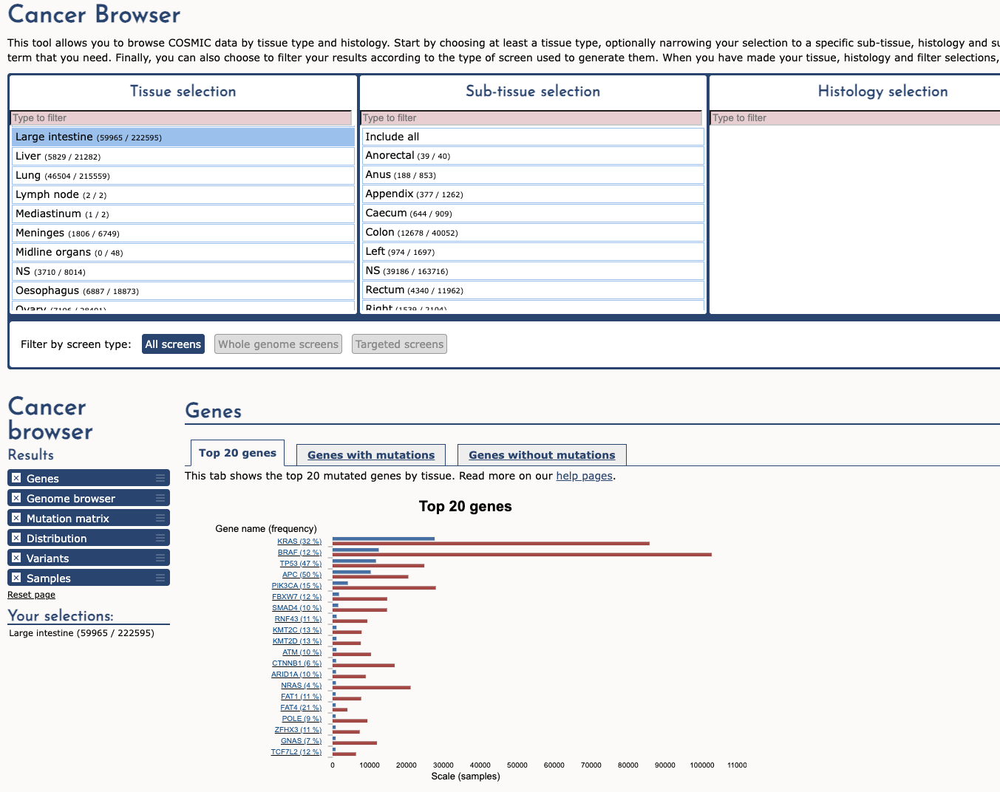
Step 6 – Back to TP53 with the tissue filter
We can then see the top genes mutated in Large intestinal samples. Clicking the TP53 mutation returns us to the TP53 page but with additional filters.
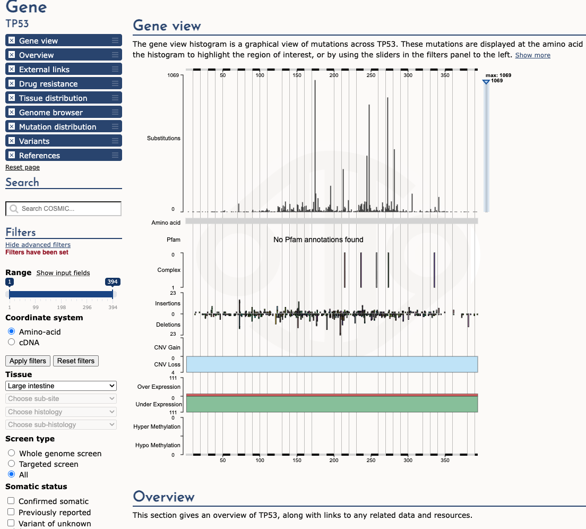
Note the left-hand filter with tissue type selection applied. The result is that the most represented mutation is now different. Previously it was 3908 at position 273 but the most frequent mutation is now 175 with 1069 mutation count. We can observe how different tissue types reflect different mutations.
Part 4 - Advanced Exercises
Exercise 1 – Real genome or alignment artefact? (Part 1, BAM)
Go back to the two regions you looked at in NA12878.bam:
- Region 1:
chr1:143,220,111-143,221,807 - Region 2:
chr2:32,915,196-32,917,755
Do the reads in these regions reflect the actual genome of the sample, or are they mostly alignment artefacts? What in the IGV view supports your answer?
To help you decide, add two annotation tracks. Open Tracks → Hosted Annotations…, go to Mapping and Sequencing, and tick:
- LowMap+SegDup (under Difficult regions from GIAB). GIAB uses this track to mark segmental duplications and regions that are hard to map with short reads.
- Simple Repeats (under Repeats). In region 1 you should see one bar over the whole window, with the repeat unit
TCGAATGGAATCATCA.
Does what you see in these tracks change or confirm your answer?
Answer
Both regions are mostly alignment artefacts.
In region 1, most reads are drawn transparent, which means mapping quality 0, and each read has several mismatches. The few coloured pairs (red, blue, orange) also have MAPQ 0, and their mates are far away on chr1 or on chr14. LowMap+SegDup covers the whole window. This part of chr1 exists in several nearly identical copies, so reads that really come from another copy end up here, and the small differences between the copies show up as mismatches.
In region 2, the reads are short and heavily clipped, and almost every one has a different colour because the mates are spread over many chromosomes. Most of them are supplementary alignments with MAPQ 0. The reference sequence bar is solid orange, which is a run of about 400 G’s, followed by a block of 1,000 Ns. Low-quality, G-rich pieces of unrelated reads stick to this run of G’s.
Low mapping quality, evidence that doesn’t agree (mates scattered everywhere), and a repeat or duplication underneath are the typical signs of an artefact. A real variant or SV would be supported by many well-mapped, independent reads telling the same story.
Exercise 2 – TP53 in the germline VCF (Part 1, germline VCF)
HG008 is a pancreatic cancer patient. The germline variants in this file come from long-read (PacBio HiFi) sequencing of the patient’s normal tissue. The variants were called with dipcall, which builds the two chromosome copies from the long reads and compares each one with the reference. As you go through the variant and genotype fields, look out for what the long reads add that you would not usually get from short reads.
Go to TP53 (chr17:7,668,000-7,690,000). Click the variant at chr17:7,676,154, then click its genotype cell. Go through every field in both popups and write down what you think each one means.
- Is this variant germline or somatic? How can you tell?
Answer
Germline. The variant is in the normal sample (HG008N), so the person
was born with it. It is rs1042522 (Use the annotation
ClinVar dbSNP under Variation), the well-known
TP53 Pro72Arg variant. In most populations the
arginine version (the ALT here) is actually the more common one: a
“variant” only means different from the reference genome, not rare or
harmful.
- What does
0|1tell you that0/1would not?
Answer
The pipe means the genotype is phased: we know which chromosome copy
carries the ALT allele. This comes from the long reads
(HiPhase). Note that IGV shows A | G in the popup either
way, so check the PS field to see whether a variant is phased.
- Find another heterozygous variant in TP53 with the same PS value. Is its
ALTallele on the same chromosome copy as theALTat7,676,154?
Answer
All heterozygous variants in TP53 share PS
7498016, so they belong to one phase block. Variants
written the same way (0|1) have their ALT on the same copy;
a 1|0 variant has its ALT on the other copy.
- Why is AD only
1,1for this variant?
Answer
This VCF was made by dipcall, which compares two genome assemblies
with the reference rather than counting reads. Here AD counts assembly
pieces, one per chromosome copy, so a heterozygous site shows
1,1 and a homozygous one 0,2. For the same
reason, QUAL is always 30.
- Which fields in this VCF would you not expect to see in a germline VCF made from short reads?
Answer
The main addition from the long reads is phasing. Most heterozygous
genotypes are written with a pipe (0|1), and the PS (phase
set) and PF (phasing flag) fields record which phase block each variant
belongs to. Phase blocks here are tens of kilobases long, so a whole
gene like TP53 sits in one block. With short reads, most
variants would be unphased (0/1) and these fields would be
missing. Some other fields come from how this particular file was made
rather than from the read length: dipcall compares two genome assemblies
with the reference, so AD counts assembly pieces,
QUAL is always 30, and the filters
(HET1/2, GAP1/2) describe problems with the
assemblies. A short-read caller would instead give read counts
(AD, DP) and genotype quality
(GQ).
Exercise 3 – KRAS and CDKN2A in the somatic SV VCF (Part 1, somatic VCF)
HG008 is a pancreatic cancer. The tumour and normal samples were sequenced with long reads. The SV variants are called by the long-read structural-variant caller Severusa which compared the tumour and normal to find SVs present only in the tumour. The resulting file contains the two classic pancreatic cancer events: a gain of the oncogene KRAS and a loss of the tumour suppressor CDKN2A.
| Gene | Locus | SV record |
|---|---|---|
| KRAS | chr12:24,600,000-26,850,000 | severus_DUP1372 |
| CDKN2A | chr9:21,940,000-21,985,000 | severus_DEL7384 |
For each one, click the SV and its genotype cell, and note SVTYPE, SVLEN, STRANDS, the genes listed in BCSQ, VAF, DR/DV and HP.
- Why would a tumour gain an extra copy of an oncogene but lose a tumour suppressor?
Answer
KRAS sits in a 1.95 Mb tandem duplication that covers 12
genes (VAF 0.36, HP
1).
An extra copy of an oncogene increases its growth signal.
CDKN2A is removed by a 19.9 kb deletion
(VAF 1, DR 0, DV 11,
HP 1). Losing a tumour suppressor removes a brake on cell
division.
Oncogenes help a tumour when they become more active, and tumour suppressors help it when they are lost.
- The CDKN2A deletion has genotype
0/1, yet itsVAFis1. What could explain this?
Answer
A VAF of 1 means none of the reads at the
breakpoints show the normal sequence, so there is most likely no intact
copy left: the other copy was probably lost by a separate event.
CDKN2A is completely inactivated in this tumour. Somatic genotypes are only approximate, and VAF is more informative.
Since HG008-T is a cell line, there are no normal cells to lower the VAF.
- What does the field
STRANDSwith the value-+tell you about the KRAS event?
Answer
-+
describes a junction that faces outward, which is the signature of a
tandem duplication. With short reads, the same event shows up as read
pairs facing away from each other.
Exercise 4 – cBioPortal (Part 2)
BRCA1andBRCA2are the best-known breast cancer genes, yet in the OncoPrint they are altered in only 3–4 % of patients. Why?
Answer
BRCA1 and BRCA2 are famous because inherited (germline) variants in them strongly raise cancer risk.
The TCGA and METABRIC data in cBioPortal are somatic, meaning only changes found in the tumour, so germline variants are not shown.
Germline BRCA1/2 carriers account for only about 5 % of breast cancers. BRCA1 can also be switched off by promoter methylation or by losing one copy, and neither counts as “altered” by default.
How often a gene is mutated in tumours is not the same as how important it is for cancer risk.
- Summarise in one sentence what each view is useful for: OncoPrint, Cancer Types Summary, Mutual Exclusivity, Plots, Mutations, Comparison/Survival and CN Segments.
Answer
| View | Useful for |
|---|---|
| OncoPrint | Seeing which patients have which alterations, across all queried genes at once |
| Cancer Types Summary | Comparing alteration frequency between studies or cancer types |
| Mutual Exclusivity | Testing whether two genes tend to be altered together or rarely together |
| Plots | Comparing any two attributes, for example fraction of genome altered by subtype |
| Mutations | Seeing where mutations fall on the protein (hotspots vs spread out) and their annotation |
| Comparison/Survival | Checking whether altered and unaltered patients differ in survival or clinical features |
| CN Segments | Looking at copy-number gains and losses along the genome, in an embedded IGV |
Exercise 5 – COSMIC (Part 3)
- What is COSMIC, and how is it different from cBioPortal?
Answer
COSMIC, the Catalogue Of Somatic Mutations In Cancer, is run by the Wellcome Sanger Institute.
Its team collects somatic mutations from thousands of published papers and genome screens, across all cancer types.
cBioPortal is organised around studies: you pick a cohort and see each patient’s alterations together with clinical data such as survival.
COSMIC is organised around genes and mutations: you ask how often a particular mutation has been reported, and in which tissues.
COSMIC is free for academic use after registration; cBioPortal is open.
- What are other COSMIC features worth a look?
Answer
A few worth further exploring:
- the Cancer Gene Census (a curated list of cancer genes and their role),
- Mutational Signatures (patterns that point to causes such as smoking or UV light),
- the Cancer Mutation Census (mutations ranked by evidence that they drive cancer),
- COSMIC-3D (mutations on protein structures),
- Actionability (links to drugs and clinical trials) and the Cell Lines Project.
Exercise 6 – Which tool for which question?
Which tool would you use to answer each of these questions?
- Is this variant real in my sequencing data? What do the reads look like?
Answer
IGV
It shows your own reads, with mapping quality, mismatches and read pairs
- How often is a gene altered in a cohort, with which other genes, and does it affect survival?
Answer
cBioPortal
It combines cohort data with clinical outcomes
- Has this exact variant been seen before, in which tissues, and what papers report it?
Answer
COSMIC
It collects somatic mutations from published studies, by tissue
- Is this variant clinically actionable?
Answer
OncoKB (or CIViC)
Experts link variants to approved drugs and trials. OncoKB annotations also appear in cBioPortal
- Is this variant common in healthy people (likely benign germline)?
Answer
gnomAD
It gives allele frequencies from hundreds of thousands of people
In practice these tools are often used together:
IGV to check that a variant is real, gnomAD to check that it is rare,
COSMIC and cBioPortal to see whether it is known in cancer,
and OncoKB to see whether it matters for treatment.